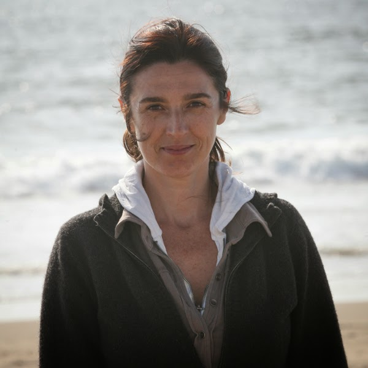
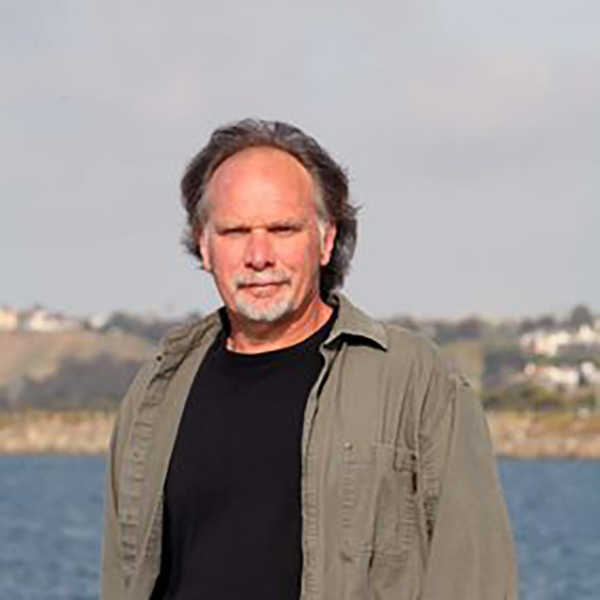

President of OCS
Dr. Maddalena Bearzi, PhD

In 1996, Maddalena founded and became Director and PI of the Los Angeles Dolphin Project, in California, the first comprehensive marine mammal study ever conducted in the L.A. waters. Two years later, she co-founded Ocean Conservation Society taking the position of President, where she combined her skills as a marine biologist with her experience as an active environmentalist. Many TV stations, radios, newspapers and magazines - both in United States and Europe - have featured her research and conservation work.She has a strong academic background in Marine Biology, Ecology, Oceanography and Marine Mammal Conservation and Management combined with almost twenty-five years of field research experience, and over five years of teaching experience at the University of California, Los Angeles. Maddalena has a broad experien
Exective Director
Captain Charles Saylan

As Executive Director of Ocean Conservation Society, Charles Saylanhas worked toward raising public awareness of environmental issues and stimulating action through the creation and implementation of participatory environmental education programs. His award winning programs emphasize measurable impact and community involvement.? Charlie is also involved in studying the ecology of marine mammals in California with a strong conservation bias. He is co-author of several peer-reviewed scientific papers on cetacean ecology and conservation, and is active in ongoing field marine mammal research focusing on the effects of pollutants on cetaceans. In April 2012, Charles served as a panelist at the 2012 White House Summit on Environmental Education, discussing ideas and recommendations from his book "The Failure of Environmental Education (And How We Can Fix It).